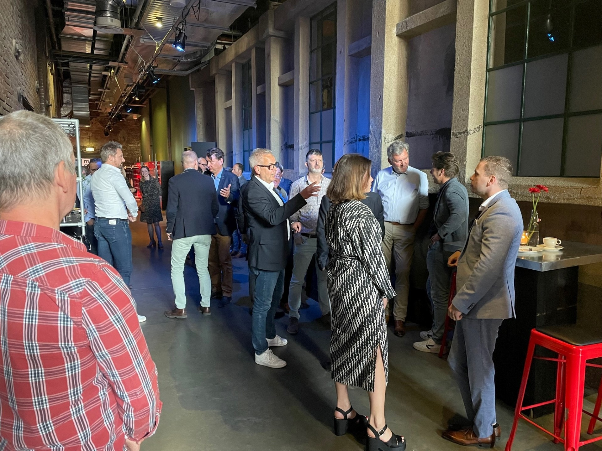

About
ICT-ondernemers en kennisinstellingen op het gebied van IT, Telecom & Media in Limburg hebben zich verenigd in Regitel. Regitel behartigt de belangen van haar leden, zorgt voor overleg en is klankbord voor bedrijfsoverstijgende vragen en activiteiten. REGITEL slaat bruggen tussen bedrijfsleven, kennissector, overheden en verwante verenigingen in aangrenzende regio's. Zo'n vijf keer per jaar worden er ledenbijeenkomsten georganiseerd. Dit kunnen zowel brainstormsessies als excursies en studiereizen en seminars met gastsprekers zijn. REGITEL is opgericht op 22 maart 1996 op initiatief van industriebank LIOF.

Organisatie
Organisatie
REGITEL, een netwerk van ICT-relaties in Limburg en daarbuiten
REGITEL is de Limburgse vereniging voor vraagstukken en initiatieven op het vlak van digitalisering. De vereniging beoogt de belangen van haar leden te behartigen en grensoverschrijdende samenwerking te bevorderen. Met de vervulling van deze doelstellingen draagt REGITEL bij aan de versterking van de ICT sector in Limburg.
Digitalisering is de 4e disruptieve technologische innovatie die als een tsunami over ons heen komt. De Informatie en Communicatie Technologie (ICT) heeft de afgelopen 4 decennia een stormachtige groei doorgemaakt en de komende 3 decennia staan volledig in het teken van disruptieve technologieën.
Digitalisering treft de hele Limburgse samenleving, ongeacht in welke sector je werkzaam bent. Vandaar dat Regitel de afgelopen jaren samen met Provinciale- en regionale overheid, onderwijs en ondernemers grote inspanning heeft geleverd in het verbinden van de Quadruple Helix (Overheid, Onderwijs, Ondernemers en burgers).
Vanuit dit perspectief legt de vereniging Regitel de verbinding en spant zich in om samen met haar leden de noodzaak van het bewustzijn van de grote impact van digitalisering op de Limburgse samenleving bij bestuurders van Overheid, Onderwijs en Ondernemers alsmede de Limburgse burger onder de aandacht te brengen. Een verdere digitalisering van de Limburgse samenleving biedt grote mogelijkheden om de economische structuur verder te versterken.
REGITEL is, mede op initiatief van NV Industriebank LIOF en KPN, opgericht op 22 maart 1996. REGITEL telt momenteel zo'n 50 organisaties met 60 personen als leden, met een grote variëteit in expertise op het gebied van digitalisering. U kunt ze vinden op de leden pagina.